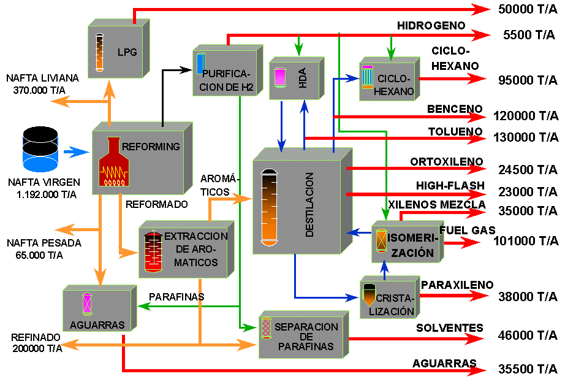
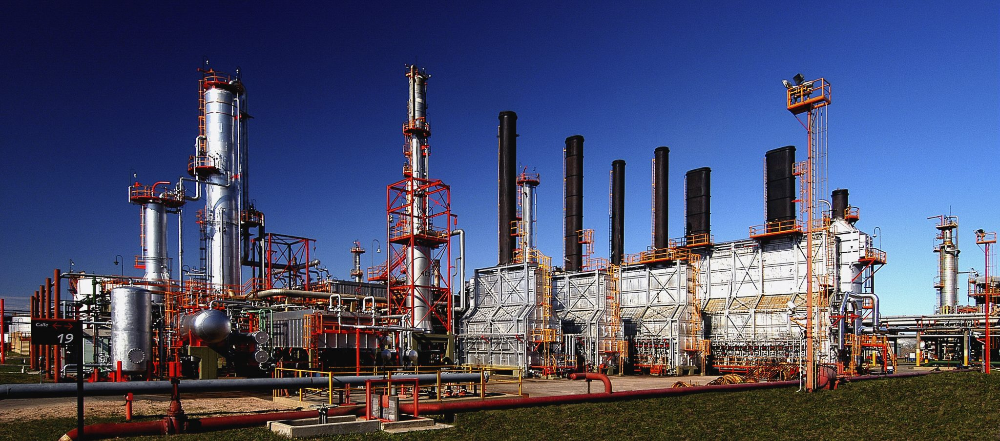

¿Qué son los BTX y cuál es su Impacto Estratégico?
BTX es el acrónimo de Benceno, Tolueno y Xilenos, son hidrocarburos aromáticos fundamentales para la industria química. Son precursores en la producción de plásticos, solventes, resinas, explosivos y otros productos
Benceno (B)
Un anillo de 6 carbonos, fundamental para plásticos y resinas.
Tolueno (T)
Benceno con un grupo metilo, usado en solventes y explosivos.
Xilenos (X)
Benceno con dos grupos metilo.Mezcla de isómeros. Base para fibras de poliéster.
La disponibilidad de BTX es clave para el funcionamiento de múltiples industrias en Argentina, impactando directamente en la producción de:
Plásticos
Envases, componentes automotrices, juguetes (ej. Poliestireno).
Fibras Sintéticas
Ropa, alfombras, textiles técnicos (ej. Poliéster).
Pinturas y Solventes
Recubrimientos, adhesivos, diluyentes.
Detergentes
Productos de limpieza para el hogar e industriales.
Productos Farmacéuticos
Medicamentos y principios activos.
Caucho Sintético
Neumáticos, suelas de zapatos, selladores.
BTX: Obtención industrial
En Argentina, la principal materia prima para obtener BTX es el petróleo crudo. Estos valiosos aromáticos se extraen y refinan a través de procesos petroquímicos complejos.
Reformado Catalítico
Es la vía más significativa. Este proceso transforma naftas (fracciones ligeras del petróleo) de bajo índice de octano en una mezcla rica en compuestos aromáticos, incluyendo Benceno, Tolueno y Xilenos. El objetivo principal es mejorar la calidad de la nafta como combustible, pero los aromáticos obtenidos son cruciales para la petroquímica.
Flujo Simplificado:
Naftas de Bajo Octanaje ➔ Catalizador y Alta Temperatura ➔ Compuestos Aromáticos (BTX) + Nafta de Alto Octanaje
Pirólisis (Cracking)
Aunque su objetivo principal es la producción de olefinas ligeras como etileno y propileno (bases para muchos plásticos), la pirólisis (o cracking con vapor) de naftas o gasóleos también genera una corriente líquida rica en aromáticos, que incluye BTX como valiosos subproductos.
Flujo Simplificado:
Naftas/Gasóleos ➔ Alta Temperatura (Vapor) ➔ Etileno, Propileno + Fracción Aromática (BTX)
Una vez generados a través de estos procesos, los aromáticos BTX deben ser separados y purificados mediante técnicas como la destilación fraccionada para obtener Benceno, Tolueno y Xilenos con la pureza requerida por la industria.
Principales Actores y Polos Productivos
La producción de BTX en Argentina se concentra en las grandes refinerías petroquímicas del país, en los polos de Bahía Blanca y Dock Sud, donde operan empresas como YPF Química, Dow Argentina, y otras. El principal actor y productor histórico es YPF, especialmente en su Complejo Industrial de La Plata (CILP). Este complejo es el corazón de la producción de aromáticos en Argentina y un polo petroquímico fundamental.
El CILP de YPF no solo produce BTX, sino que también los procesa para obtener derivados, integrando varias etapas de la cadena de valor petroquímica.
La producción nacional de BTX es vital porque alimenta directamente diversas cadenas de valor, generando desarrollo industrial local y sustituyendo importaciones:
Benceno
➔ Se utiliza para Poliestireno(envases, aislantes), resinas solventes e incluso nylon
Tolueno
➔ Uso directo como Solvente (pinturas, adhesivos), poliuretanos (espumas, asilantes), se oxida para dar ácido benzoico (conservantes)
Xilenos
➔ para-Xileno ➔ Ácido Tereftálico ➔ PET (botellas, fibras textiles)
➔ orto-Xileno ➔ Anhídrido Ftálico (plastificantes, resinas)
➔ meta-Xileno ➔ Menos demanda, se usa como Solvente
Esta transformación de materias primas básicas en productos de mayor complejidad demuestra cómo la producción de BTX genera un significativo valor agregado dentro del país.
Mirando al Futuro: Desafíos y Oportunidades
La industria de BTX, si bien es fundamental, enfrenta un panorama global y local en constante evolución.
Desafíos Actuales
- Volatilidad de los precios internacionales del petróleo, su principal materia prima.
- Necesidad de inversiones continuas para mantener y modernizar la capacidad productiva.
- Creciente demanda por procesos más sostenibles y con menor impacto ambiental.
- Competencia de productores internacionales con economías de escala.
Oportunidades para Argentina
- Optimización de los procesos existentes para mejorar la eficiencia y reducir costos.
- Integración de nuevas tecnologías que permitan una producción más limpia.
- Desarrollo de cadenas de valor aguas abajo para maximizar el valor agregado local.
- A largo plazo, exploración de fuentes alternativas para aromáticos, como la biomasa o el reciclaje químico de plásticos (aún en etapas tempranas de desarrollo a gran escala).
- Aprovechamiento de los recursos de Vaca Muerta para asegurar materia prima.
En resumen, la obtención de Benceno, Tolueno y Xilenos en Argentina no es solo un proceso químico, sino un motor estratégico que impulsa la autonomía y el crecimiento económico de nuestra industria nacional.
Es un sector fundamental, aunque a menudo invisible, para la vida cotidiana y la economía del país.